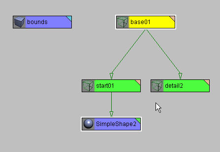
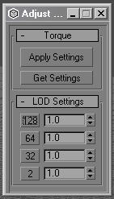
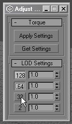
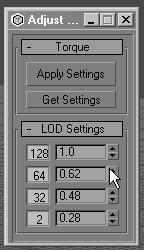
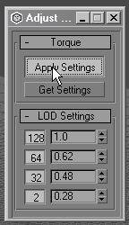
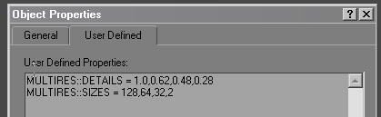
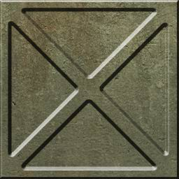
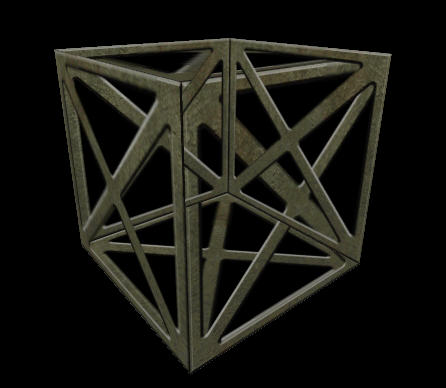
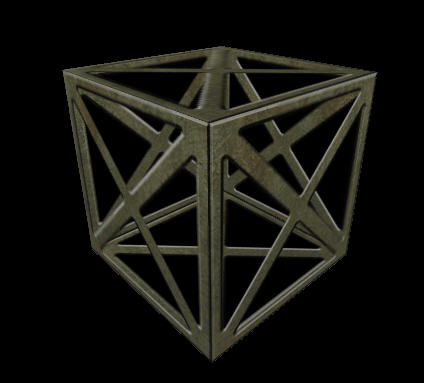
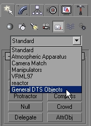

|
Section I: Introduction to the Max2DTSexporterThis documentation explains how to use the max2dtsExporter with 3D-Studio MAX4. MAX3 users please note that most of the material contained herein also applies to MAX3 but there may be some differences.
A File Pack containing all example files referenced in this documentation is available for download: (torque_max_filepack.zip 2,314 KB) These files are unavailable right now. Please stay tuned
NOTE: All the .max files are compatible with MAX4 only. A MAX3 compatible versions should be ready in the near future. Installation:
Place the file 'max2dtsExporter.dle' in the 3DSMAX 'Plugins' directory. Please make sure that you download and install the plugin for the version of MAX that you are running. NOTE: Max plugins are compatible only with the version of the software that they were compiled for. General Information:This document assumes a certain level of familiarity with 3DStudioMAX versions 3 or 4. The majority of the information here is presented to allow users to become familiar with "Torque" specific tools and techniques. Where appropriate, certain basic information about how to work within 3DSMAX has been included. The DTS exporter is a utility and can be found in the 3DSMAX utility panel. To access the utility, click on the Utility panel and press the "more" button. This will bring up a new window. Within the new window, there will be a list. Scroll down the list and select the"DTS Exporter Utility". It is advisable that you add "DTS Exporter Utility" to your default set of buttons in your utility panel. For information how to add a new button to your Utility set, please consult your 3DSMAX documentation or help file. The exporter uses 3DSMAX's units to determine the size of the object. One 3DSMAX unit is equal to one meter in the game. : It does not matter if you have your unit scale set to centimeters, inches, or miles. One of 'whatever' is equal to one meter in the engine. Consult your 3DSMAX documentation to set this up properly. To make sure you model is facing the right direction, the front of you model show be facing towards the positive y axis in max. When you have the move tool selected in max the positive y axis is the green arrow. Meshes without texture coordinates will not work correctly in the game. Make sure you have UV coordinates on the meshes you are trying to export. The exporter generates a dump file named dump.dmp in the directory you are exporting to. If your export fails, check the dump file first to see where it is crashing in the export process. Most of the time it is something simple, like spelling the word "bounds" wrong. The exporter is for the most part stable. Like all 3DSMAX plugins, it can crash. If it is constantly crashing on export with ALL shapes, the error likely lies not in the exporter, but in your system configuration. If a particular model is continually crashing on export, corrupted meshes, bad texture vertices, or double faces in the model might be the cause. Check your dump file, and if it stops on a particular mesh, do a test by deleting it in your scene, then try to export again. After you have successfully exported a model, check your shapes in the showtool (-show switch) first before bringing them into your game. If it works in the showtool but not in the game, the file exported properly and the problem probably exists elsewhere. The requirements of a game may be different than the requirements to get a shape exported. What is required for it to work 'in the game' is not the same as what is required for a shape to export. If your game requires certain nodes be present, a certain naming convention, or certain parameters set a certain way, then get that information and set up the shape accordingly. If your shape works in -show but not in the game then it is most likely not the exporter that is at fault. Some of the tools and techniques outlined in this document (especially the animation setup and usage) require a paradigm shift about how one thinks of setting up shapes. The engine supports a very flexible Non Linear Animation (NLA) system. It is hard at first to grasp, but with patience, one can understand and utilize the tools controllably. This document will take you through the steps of setting up some simple shapes that will familiarize you with the exporter and how it works, and then will move on to more complex topics.
A Simple Shape:You can use the SimpleShape.max in the file pack to follow along with. From either the top, user, or perspective view, make a sphere with 16 sides. Make sure the sphere has mapping coordinates by putting a check in the checkbox at the bottom of the creation panel. Align the sphere to the center of the world using the transform type-in floater. (While in Move Mode, go to Tools. Transform Type-In) and enter 0 in all the boxes in "Absolute World". Name this shape "SimpleShape". Copy SimpleTexture.bmp from the file pack and put it in your export destination directory in the Torque project. The texture must reside in the same directory as the exported file in order to work in the test tool and the game. Go to the 3DSMAX Material Editor and select a material. Open the 'maps' rollout panel. In the diffuse slot, select the button to choose a texture. Select 'bitmap' from the list. Find and choose SimpleTexture.bmp. Turn on 'Show map in Viewport' (the button looks like a little checkerboard cube.) Make a box that encloses the entire shape. Again, do this from either the top, user or perspective view. Align this to the world center as above. Name this box "bounds". You are now almost ready to export a DTS shape.
Exporting the Simple Shape:Select SimpleShape. Press the "Renumber Selection" Button. A dialog box will pop up. Enter '2' in the window and hit OK. This will add a trailing number to your shape (this will be the detail resolution). It does not refresh the Max interface, so deselect SimpleShape and select it again in order to see the changes. Make sure SimpleShape (now named SimpleShape2.max) is selected, and press "Embed Shape" button. Open the schematic view. What you see should look like this.  The Embed shape button correctly created a hiearchy for your shape which will allow it to export. It did this by creating a few dummy objects and then named and linked them correctly. This can be done manually as well, using MAX dummy objects for the base and start shapes and the detail markers. You are ready to export the shape. Go to the Utility panel, choose the 'DTS Exporter Utility', open it and Export the shape by choosing Export>Whole Shape. Export this shape to your destination directory in the Torque engine. Name the shape SimpleShape.DTS Make sure your texture map is in the same directory as the DTS shape. If it is not, the texture will not load and the shape will show up white. Introduction to the ShowTool:ShowTool Pro is a custom tool written specifically for loading and rendering Torque ready models (.dts). Using this tool, you can load in a static DTS model and any related animations which are stored as DSQ files. Once the model is loaded, you can toggle various rendering perspectives, multiple camera angles, zoom in, play animations at varying speeds, and more.
For more information, head on over to the ShowTool Pro documents to read more about using the tool.
MultiRes:The MultiRes modifier in 3DSMAX is supported for detail level creation. Continuous level of detail is not supported. At export time, the exporter looks to see if there is a MultiRes modifier on the object and if so, creates static Level of Detail meshes based on the parameters input into either the shapes "User Properties" or through the .CFG file using the T2Autodetail parameter.
Simple Shape Detail Levels using MutliRes:Open SimpleShape2.max located in the documentation file pack. Now, install this macroscript named adjustLODs.mcr, also found in the file pack Many thanks to Jon Lanz for writing this very useful utility. Please refer to your 3DSMAX help file about how to install macroscripts. Now, launch the script by pressing the AdjustLODs button in your toolbar. Select the MultiRes shape, and you should see something similar to this:  If you have anything in the user properties, the script will choke on it. Cut and paste any text in the user properties somewhere else. The buttons that signify the detail markers will be un-pressed, so press them.  This will enable the script to write the necessary data for the Multires export into the user properties (thus saving you some time and effort of doing this yourself). The "spinners" that you see next to the detail markers are what is used in the script to generate the user properties information for the Multires detail settings that you have enabled. Spinner changes are not interactive, so you won't see any changes occur as you move the numbers around. Adjust the percentages in the MultiRes mesh until you see something you like (or you hit your target polygon count) and then adjust the spinner in the script to match. Note that the numbers are in decimal percentages, so instead of 0-100%, you will be adjusting 0.0-1.0 with the script.  When you are happy with the settings, click "apply settings".  Open up the user properties of your object, you will observe that the syntax that was outlined in the " MultiRes and Detail Levels" section, has been placed here by the script.  The values can be entered by hand if necessary, the script just makes it easier. Make sure you turn the dial in MultiRes back up to 100%. If you did everything properly, the shape should be ready to export. Export it and test it out in the ShowTool. NOTE: Since the detail meshes do not acutally exist in the scene, the 'Register Details' utility will not pick them up. You will have to construct the detail markers manually.
Collision Objects:There is no correct way to make collision objects for the Torque engine. It all depends on how your programmer wants to implement collision detection. Several games used this engine and they all used different collision schemes. Different collision schemes can be different for different shapes as well. Some shapes use simple sphere collision that is derived from the bounding box, some have custom-built collision shapes. Vehicles tend to have custom collision shapes. Custom collision shapes can be created by assigning a negative detail number to the shape (like -1) and creating a corresponding detail marker. Shapes with negative number will export but not draw. The Torque engine presently uses detail markers named "Collision-<n>" with the mesh shapes named Col-<n>. The shapes must be convex hulls (no concave surfaces). Here are some of the naming conventions: Collision-1 thru Collision-9: These are the collision markers Col-1 thru Col-9: These are the actual collision shape geometry. LOS-9 thru LOS-15: Markers for line of sight, or 'bullet' collision shapes. LOScol-9 thru LOScol-15: Geometry for line of sight collision. Keep the detail meshes as low in polygon count as possible as this is processor intensive. Vehicles are limited to ONE collision mesh for the collision shape.
Creating Collision Details for Simple Shape:Open SimpleShape3.max located in the documentation file pack. Make a copy Clone of SimpleShape 128 and change the segments to 6. Name this mesh'Col-1'. Clone one of the detail markers and name it 'Collision-1' Export this shape. It will now have a collision mesh. The easiest way to test this is to export it over a shape in the game. You can export over bush1.dts (make sure you rename the old bush and have your texture in the correct directory). Drop in the demo and you can crash into and bounce off the shape you just made.
Materials and Textures:The following describes procedures and usage for texture mapping of objects in the Torque engine. General Information:Material Colors are not supported. Multi sub-object maps are supported. Textures maps must be powers of two (256X256, 64X64). The maximum size supported is 512X512. Textures do not have to be square.
Translucency:To make an object translucent, the texture on the object must have an alpha channel. The amount of translucency is controlled by the alpha channel. Put the texture in the diffuse mapping slot and check the 'Opacity' checkbox in the material editor. You don't need to put a texture in the Opacity slot, it will get the opacity information from the alpha channel. Double Sided Materials:Materials can be double sided. You can make a material 2-sided by going into the material editor and turning "2-sided" on. This feature is disabled by default and is turned on in the DTS exporter utility parameter rollout panel. Simple Shape with Double Sided Materials and Translucency:Open the file SimpleShape4.max and the associated texture SimpleTexture4.png located in the documentation file pack. Here is the asscociated texture map:  You will see that the material applied to the shape is a translucent .png. In the material editor, make the material double sided. Now, in the exporter in the utility panel, make sure 'Enable 2-sided materials' is checked in the Parameters rollout. Export the shape.
Checking Translucency in the ShowTool:Here is a screenshot:  The shape is all screwed up. Things are not drawing in the correct order. Some of the polygons are drawing in front of other polygons. This is due to the way translucent shapes are drawn in the engine. More details on why this happens is covered in Appendix A. In order for translucent shapes to draw correctly they must be forced to sort in the correct order. There are tools in the Torque Engine that help in this process. Simple Shape with Translucency and Sorting:Select the SimpleShape and prepend the name of the object with "SORT::". It should now be names "SORT::SimpleBox2" This will tell the exporter that this object may have trouble sorting and it will take extra steps to ensure it sorts correctly. Re-export the shape and open it in the ShowTool. It now sorts correctly.  The exporter has split some of the faces so that it the rendering engine can tell which faces are in front of the other faces more easily. As this increases the polygon count of the shape (you can check this in the detail level window in the showtool) It should be noted that SORT objects are by no means a 'silver bullet'. There are a few SORT parameters that can be added shapes to help solve special problems. These are covered in detail in Appendix A. Environment Mapping:To make an object environmentally map, check the "Reflection" channel in the material editor. You do not need to put a texture in the slot. You can control the amount of reflectivity by adjusting the spinner. If there is an alpha channel contained within the texture in the diffuse slot, the alpha values will be used to determine the amount of reflectivity. If there is no alpha channel, then the object will appear to be uniformly reflective based on the spinner value (100% will make the object chrome). Make sure that environment mapping is on in the engine. You can do this by making sure that $pref::environmentMaps = "1" in your prefs.CS and clientprefs.CS files. Environment mapping will not work in the ShowTool. Changes to the directory structure removed this feature from the showtool. Check your environment mapping in the game. Environment Mapping and Translucent Textures:If you want a translucent texture to environment map, mark the "reflection channel" in the material editor and the "opacity" channel. The alpha channel present in the diffuse map will be used to determine opacity. The spinner value in the reflection channel is used to determine the amount of reflectivity.
Sequence Objects:Sequence objects are necessary if animation is to be exported. The sequence object tells the exporter how to export animation data over a given range of time in 3DSMAX, and what to call the sequence. A sequence object can be created like any other helper object found within 3DSMAX.  This is done in the Create tab by clicking on the "Helpers" menu, and then using the pull down menu to choose "General DTS Objects". See the section on the Sequence Object Parameters (found below) for more details about the sequence objects. Sequence helpers that you place in the scene are unlinked objects that float unlinked in the world,( they do not need to be linked to anything.) Simple Shape with Animation:Open SimpleShape5.max located in the documentation file pack. The shape has been animated. Note that only the highest level of detail is animated, and the lower detail levels are not. Create a sequence helper. Name it SimpleAnimation.. Open the trackview and find the Track for SimpleAnimation. Now, using the create key button, add a keyframe at frame 0 in the 'Sequence Begin/End' track. Put another one at frame 40. That is all that needs to be done. Export the shape and open it in the ShowTool. It will be animating when you open it. Use the detail slider to go through the detail levels and notice that all the detail levels are using the animation form the main detail level. The transforms of the lower detail levels have been discarded and they are instead using the transform from the highest detail level. Visibility:The Torque Engine support animated visibility. Visibility is controlled by an object's visibility track. A visibility track of an object can be created in the Track View (consult your 3DSMAX documentation on how to do this). If the value of the visibility property is 1 the item is visible, if it is 0 or less the item is not visible. This much is the same as before. But now as the value goes from 0 to 1 the shape will fade in. If you don't want the object to fade in but to go from visible to invisible all at once, then make sure visibility goes from 0 to 1 instantaneously. Visibility animation must be checked in the Export control parameters rollout. Simple Shape with Visibility Animation:Open SimpleShape6.max located in the documentation file pack. Select the object and open the track view. Notice that it has a visibility track and that the track is animated. A value of 1.0 makes the object fully visible, and a value of 0.0 makes the object fully invisible (intermediate values are allowed. A value of .5 will make the object 50% transparent.) Make sure 'Visibility Animation ' is checked in the Sequence 'export control' rollout and export the shape. When you check it in the ShowTool, you will notice that just like transform animation, the lower detail levels have acquired the visibility animation. |